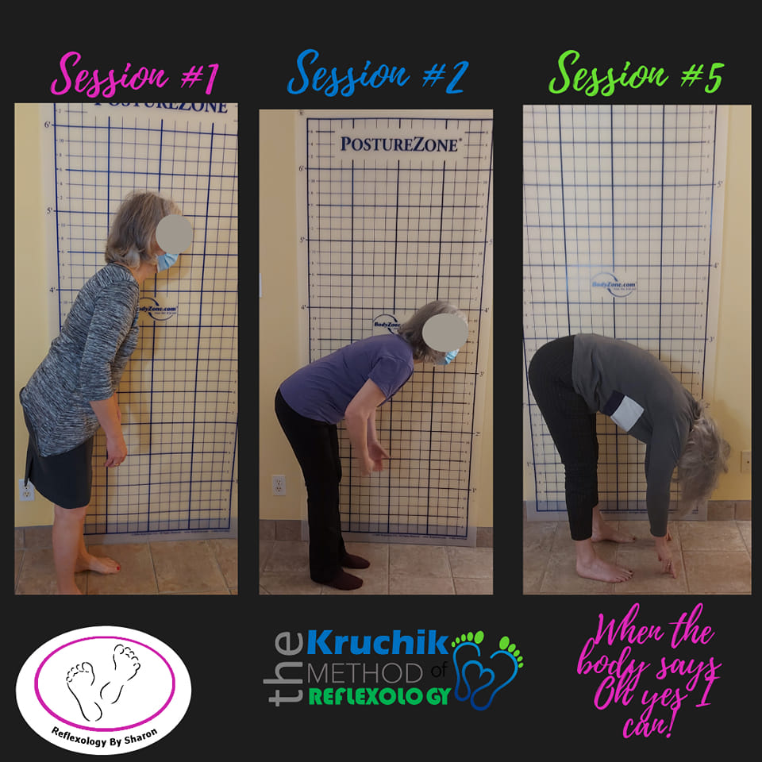
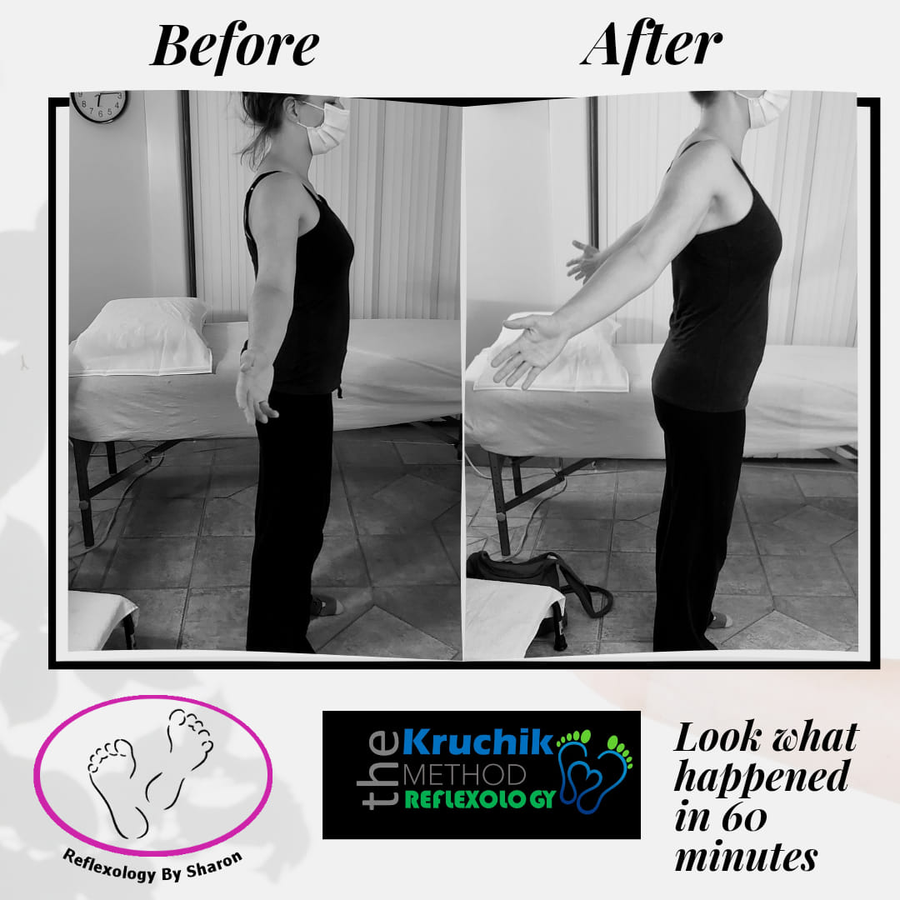
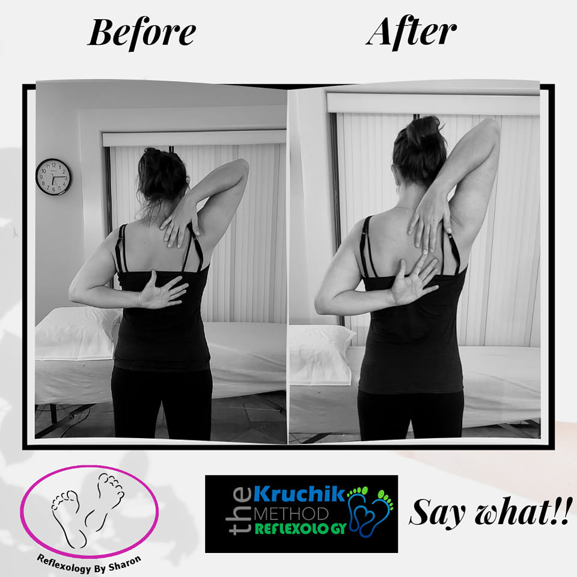

The Kruchik Method and Pain Management

Mauricio (Moshe) Kruchik is a world-renowned reflexologist and instructor who has travelled the globe to teach his methods.
He is the creator of the Kruchik Method of Reflexology and he believes that reflexology is surprisingly, wise and simple;
and as practitioners we are able to provide quick solutions to complex problems from the very first session giving a glimmer
of hope to clients who have tried everything but not always achieving long lasting results.
Sessions may include Reflexology in Motion and ice packs on the corresponding reflexes. It can bring more flexibility, reduce
pain and give the client more freedom of movement.
There are 42 different techniques that make up the Kruchik Method that can be used in combination to address many conditions such as:
· Carpal Tunnel Syndrome
· Frozen Shoulder
· Arthritis
· Migraines
· Joint pain
· Sciatica
· Chronic Pain
· Fibromyalgia
· ADHD
· Plantar Fasciitis
· Mental Health
· Auto-immune diseases
· Balance
Will Reflexology Help Me?
Although reflexology is not used to diagnose or cure disease, Reflexology looks at the person as a whole
and is concerned with the causes of the problem rather than just the symptoms. Many people find it
helps to relax and release tension in their mind and body giving them a sense of well-being.
Look at the results these customers had after just a few sessions!
  